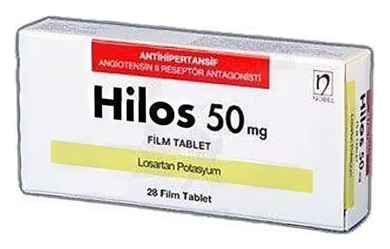

Hilos 50 mg Film Tablet, 28 Adet

Ne için kullanılır
KT · Bölüm 1HİLOSanjiyotensinİİreseptörantagonistleri(AlİA)denilenbir ilaçgrubundayeralan tansiyondüşürücü (antihipertansit)birilaçtır. Aniiyotensinİİvücuttaüretilenbirmaddedir;kan damarlarındakireseptörlerebağlanarak onların daralmalarınayolaçar.Bununsonucundakanbasıncıyükselir.Losartananjiyotensin Iİ’ninbureseptörlerebağlanmasımengelleyerekkan damarlanmngevşemesinenedenolur; böyleliklekan basıncımdüşürür.Losartankanbasıncıyüksekolantip2diyabetlihastalarda böbrekfonksiyonundaazalmayıyavaşlatır. HİLOS50 mgfilmtabletler,beyazrenkli,oval,bombeli,biryüzüçentiklifilmkaplı tabletlerdir.HİLOS28tabletlikambalajlarda kullanımasunulmuştur.
HİLOSaşağıdaki durumlardakullanılır: •Yetişkinlerde yüksektansiyonu(hipertansiyon) olanhastalarınkanbasıncım düşürmek içinkullanılır. Yüksek tansiyon, kanbasıncınızın yükselmesidemektir. Kalbiniz atarkenvegevşerken kandamarlarımzda kanın uyguladığıgüçkanbasıncıdır. Eğerbu güççokfazlaysa kanbasıncınız yüksek(tansiyonunuz yüksek)demektir. HİLOS kan damarlarınızın gevşemesinisağlar ve böylece kan basıncmızdüşer. •Günde 0.5 g proteinüri (idrardaanormal miktardaproteinin bulunduğubirdurum) ve böbrek fonksiyonunda bozulmayadairlaboratuvar kanıtları olanhipertansif(tansiyonu yüksek) tip2diyabetik(şekeri olan)hastalarda böbreklerikorumak için. •Solventrikül kalınlaşması(kalbin solkarmcığımn kalmlaşması) veyüksekkanbasıncı (yüksektansiyonu) olanhastalarda losartanın inmeriskiniazalttığı gösterilmiştir (“LIFEendikasyonu”).